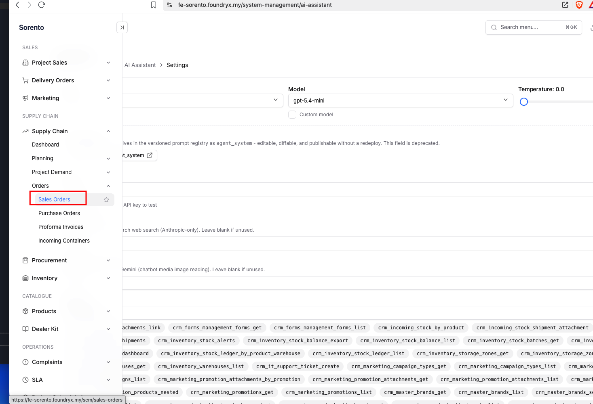
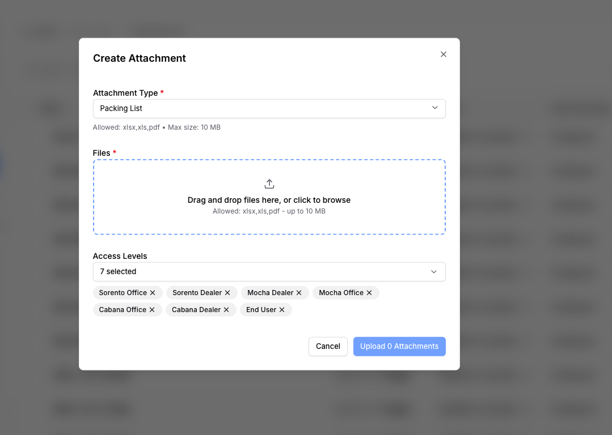
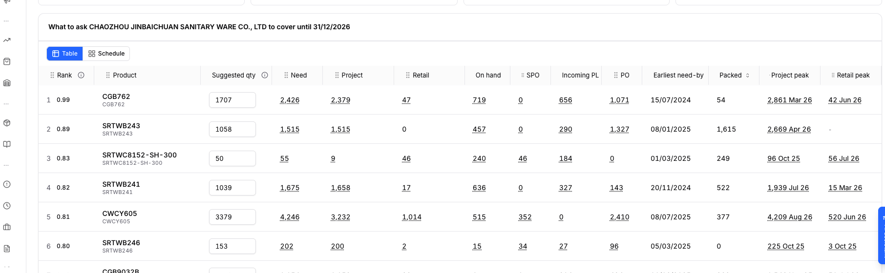
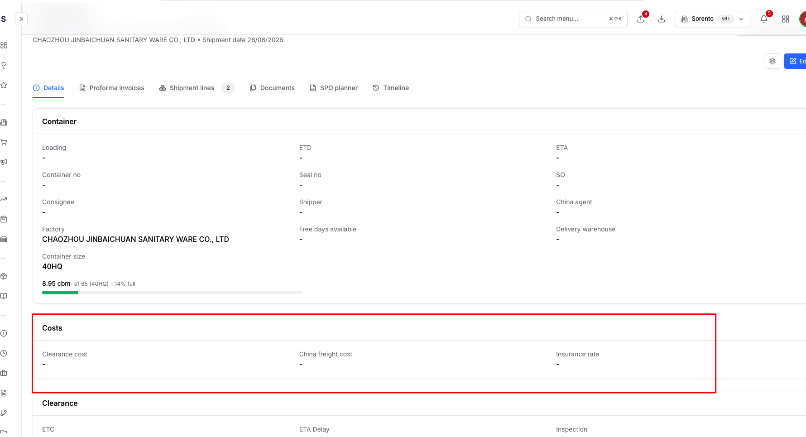
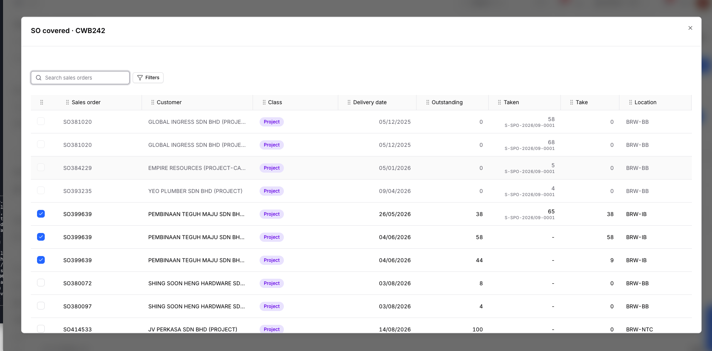
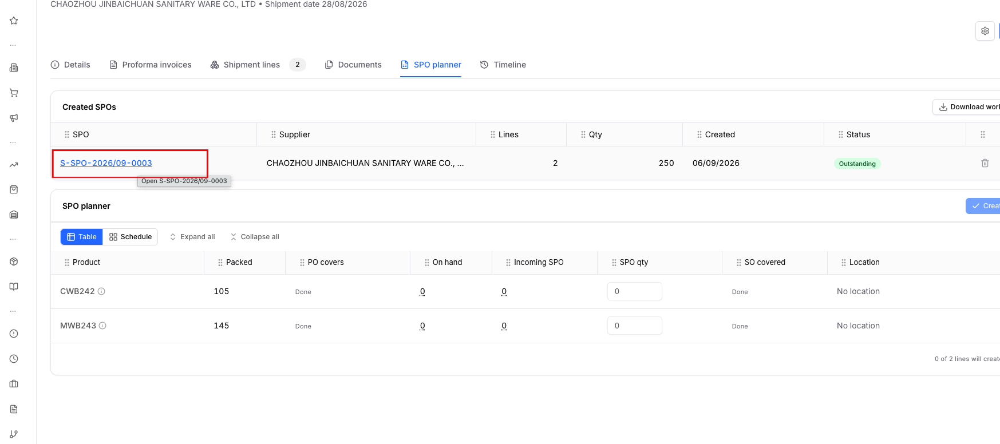
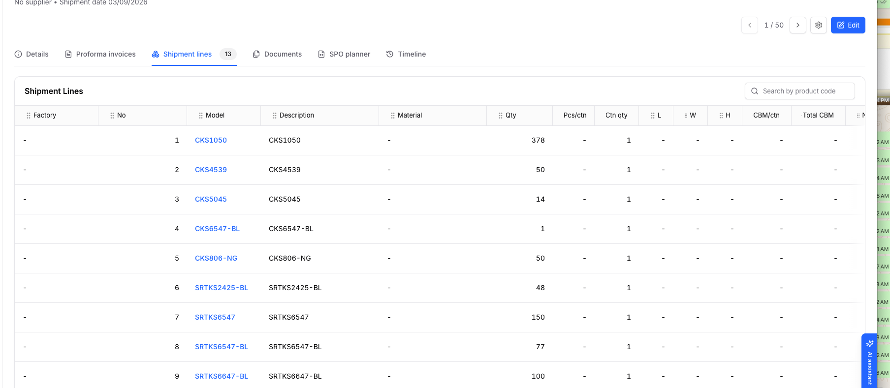

origin/main cc0789971. Green = proposed ruling, amber = what exists, blue = a question for you. Annotate anything; the five questions at the end have Queue buttons.| Lane | Holds | Migration | Size |
|---|---|---|---|
| A Navigation + CTAs + hides | 1 nav, 2 upload CTA (dialog reused), 3 SPO CTA, 8 costs hidden, 10 SPO link fix | attachment_types.default_directory_id | small, first |
| B Loading plan + supplier request | 4 formula + columns, 5 preview + highlight + remarks | none (line_edits JSON) | medium |
| C Supplier documents | 6 PI + PL upload, 7 translation memory, 12 line photos | alias seed, translation_memory, inbound_shipment_line_photos | large |
| D SPO planner | 9 SO covered tabs + editable take, 10 linkage columns, 11 edit after create | none | large |
B, C, D branch off main after A merges. C and D run first on the two slots; B follows. Planning doc: documentation/plans/scm/PLAN-scm-purchasing-consolidation-6sep.md + UAC alongside.
scm) owns Planning, Project Demand and an Orders group; Procurement (module procurement) owns Packing Lists and SPO Allocations; Project Sales Admin sits under OPERATIONS with module procurement. Leaves carry no module key: the sidebar hides by the parent's key, but the route guard hides by URL prefix (/scm = scm). Every page hardcodes its breadcrumb.

moduleKey: 'scm'
Why the leaf key: a tenant with procurement but no scm would see the link and get bounced to /. scm already depends on procurement, so nobody loses a link they can open today. No URL changes: bookmarks, the OLD_PATHS test and the guard all keep working. Seven breadcrumbs rewritten by hand; the search palette follows the tree on its own.
/scm/incoming lists the same inbound_shipments table as Packing Lists; it exists to host the upload dialog plus a consolidated-list panel and an allocation panel that the packing list detail already carries (Download packing list, SPO planner). Section 2 moves the upload, so the page has no job left. Path stays reachable this batch.POST /external/packing-lists/: header + product quantities only. (b) In-app deterministic reader on Incoming Containers (PackingListUploadDialog, Test then Confirm, multi-container blocks, aliases, dimensions, prices), already accepting an attachment_id. The Packing Lists toolbar has Create Packing List (manual form) and Import Container Status. No default folder exists anywhere: the Create Attachment dialog only takes a folder from the screen that opened it.

attachment_id, and fires no n8n webhook for it (the reader already made the shipment; the AI path would make a second one).attachment_types.default_directory_id, a folder select on the attachment type form. The generic Create Attachment dialog pre-selects it when that type is chosen. No seeding: the Packing List type and folder are admin data in production; you set the folder once after deploy.SPOImportDialog), Create SPO Allocation in the gear. No backend change. (The Order Inquiries "Upload purchase orders" is the outstanding-book importer, a different pipeline, untouched.)suggested = max(need - on hand - incoming SPO, 0). Incoming PL and PO are shown beside it, never subtracted (the tooltip says so). Fourteen hardcoded columns, no visibility config. Incoming SPO sums spo_allocations on unreceived shipments; Incoming PL sums inbound_shipment_lines on unreceived shipments, so a packing list that already has its SPO is counted in BOTH.

incoming_pl_unallocated = Σ GREATEST(quantity_shipped - spo_allocated_quantity - quantity_received, 0) over unreceived shipments, thensuggested = max(need - on hand - incoming SPO - incoming_pl_unallocated, 0).| Rank | Product | Suggested qty | Need | Project | Retail | On hand | SPO | Incoming PL | Total supply | PO | Packed |
|---|---|---|---|---|---|---|---|---|---|---|---|
| 1 · 0.99 | CGB762 | 1051 | 2,426 | 2,379 | 47 | 719 | 0 | 656 | 1,375 | 1,071 | 54 |
| 2 · 0.89 | SRTWB243 | 768 | 1,515 | 1,515 | 0 | 457 | 0 | 290 | 747 | 1,327 | 1,615 |
The three existing columns and their lightboxes are untouched; Total supply is a plain sum (On hand + SPO + Incoming PL), no lightbox of its own. Peaks stay one click away: the Project and Retail lightboxes already have the 12-month history tab. No column-visibility layer for three deletions; trigger for building one = you ask to hide a fourth column ad hoc.
| 序号 | 型号 | 商标 | 规格 | 品名 | 包装好库存 | 空瓷 | 体积(cbm) | 总体积 | 备注 | 需装数量 Qty to load | 备注 Remarks |
|---|---|---|---|---|---|---|---|---|---|---|---|
| 1 | CGB762 | SORENTO | - | 座厕 | 54 | 120 | 0.09 | 4.86 | 1,051 | Ship packed first, rest next box | |
| 2 | SRTWB250 | SORENTO | - | 面盆 | 0 | 40 | 0.05 | 2.00 | 0 | ||
| 3 | SRTWB243 | SORENTO | - | 水箱 | 1,615 | 0 | 0.035 | 56.5 | 768 |
Editable right here. The Remarks cell (and the Qty to load cell) are inputs on this preview; typing writes the plan line's line_edits, the same field the plan table edits. No need to go back to the plan table. Same renderer as the public page (moved to a shared component), so what you preview is what they open. Send from here runs the existing save-then-send and the same channel dialog.
FFF2CC in xlsx and PDF, the warning tint on screen). Title and header rows keep their style, merges and widths survive.
R11. Remarks live on the plan lineloading_plan.line_edits becomes row_key → {qty, remark} (old bare numbers read as {qty}, no migration). Editable in the plan table (new Remarks column) AND in the preview: same field, same save. Column L 备注 / Remarks in xlsx, PDF and public page; frozen into the notice's sheet_json, so a sent document never changes under the supplier. The public page stays read-only: the remark is our instruction to them.INVOICE NO.: 2026JXL0726, blocks open with ONE cell 箱号:WHSU6243088 / 封签号:WHA4528193, consignee is the 客户：SORENTO SDN BHD line, no 提单号 anywhere, a 备注： footer with carton sizes, four accessory rows with no product code. Today 箱号 resolves to nothing (only 货柜号 is seeded), so both containers would collapse into one block.| File | Read as | Blocks | Lines | Header |
|---|---|---|---|---|
| 发票 SORENTO-2026.7.26.xls | Proforma invoice | WHSU6243088 · seal WHA4528193 · 366 pcs · RMB 87,710 WHSU6356079 · seal WHA4528173 · 510 pcs · RMB 122,182 | 5 | PI 2026JXL0726 · 26/07/2026 · consignee SORENTO SDN BHD |
| 装箱单 SORENTO-2026.7.26.xls | Packing list | WHSU6243088 · 792 ctn · 49.41 cbm WHSU6356079 · 1,071 ctn · 68.85 cbm | 7 + 4 notes | same PI number → prices will be matched |
Unmatched codes: none. Footer 备注：840座斗 675*375*485mm… kept as shipment notes.
seal_no, consignee, shipper on both readers; the scanner splits a cell on / before the label test so 箱号:X / 封签号:Y yields both. Alias seed (migration, replayed by bootstrap_env.py like 357/375): 箱号 → container_no, 封签号 → seal_no, 客户 → consignee, INVOICE NO. → pi_number, 日期 → invoice_date, 客户型号 → item_code, 洁厦型号 / JIEXIA MODEL → supplier_code, 品名 → description, 数量 → qty, 单价 → unit_price, 总金额 → amount, CARTONS → cartons, 商标 → brand, the G.W / N.W / CBM pairs. SUB TOTAL and TOTAL rows skipped by the existing totals rule; a code-less row becomes a block note, not a line.
R14. A packing list block = a draft shipment with its header pre-filledContainer, seal, consignee, shipper (letterhead), 提单号 into the SO field (forwarder_order_ref, ruled 6 Sep; bill_of_lading_number untouched) and ETD when stated; one shipment per container block, both bound to the same file. Prices: PL lines matched to the PI's lines by item code inside the same container block copy unit_cost / currency and write the existing proforma_invoice_shipment_link. Together = same apply. PL after PI = match by PI number or container. PI after PL = preview says "Prices for 2 draft shipments" and confirm links them. No new tables.座厕 S-250出水 对冲), remarks (纸箱：2个, 空瓷), brand 空白, footer notes. Ruling 5 of the 3 Sep batch keeps DESCRIPTION = product master name, so descriptions only need translating where no product matched (preview), plus remarks.| translation_memory | Meaning |
|---|---|
source_text, source_lang (unique) | normalised Chinese phrase |
target_text, target_lang | English |
source manual | ai | manual always outranks ai |
hit_count, created_by, updated_at | housekeeping |
translate(texts): memory hit → return; miss → ONE batched call to the AI Assistant's configured model (prompt in the registry as supplier_translation), written back as ai; no key configured → returned untranslated and flagged. The memory is the deterministic layer of record; the model only fills its gaps. AI fill in v1, ruled 6 Sep
| Code | 品名 | English | Qty | Remark |
|---|---|---|---|---|
| SRTWCX8840-S-RL | 座斗 S-250出水 对冲 | Toilet bowl, S-trap 250, washdown ai | 266 | |
| 8840 | 盖板 | Seat cover manual | 366 | 34件*10块/件+26块 → 34 ctn × 10 + 26 |
Editing a cell in the preview writes a manual row; the same phrase in the next upload shows the edit. Shipment line remarks store English (中文); the export prints the English. System Management → Translations: DataGrid, edit in place, delete with confirmation (same shape as the supplier code aliases page).

RMB and TOTAL RM line columns stay in the export: prices, not costs. ruled 6 Seporder_inquiry_links; retail coverage is computed live and never written.
| Sales order ↕ | Customer ↕ | Delivery date ↑ | Outstanding ↕ | Taken ↕ | Take ↕ | Location ↕ | |
|---|---|---|---|---|---|---|---|
| ☑ | SO399639 | PEMBINAAN TEGUH MAJU SDN BHD | 26/05/2026 | 38 | 65 S-SPO-2026/09-0001 | 30 | BRW-IB |
| ☑ | SO399639 | PEMBINAAN TEGUH MAJU SDN BHD | 04/06/2026 | 58 | - | 8 | BRW-IB |
| ☐ | SO380072 | SHING SOON HENG HARDWARE SDN BHD | 03/08/2026 | 8 | - | 0 | BRW-BB |
so_takes: [{key, qty}].scm.order_link_claim (so_line_id, spo_allocation_id, qty, source='planner'): the table that already pairs an SO line with an SPO allocation, given a new source value rather than a new table. Without this, section 11 could never show what retail took./scm/purchase-orders/{id}. The SPO document Lines tab shows Product, Warehouse, Allocated, Received, Balance, ETA, Supplier, Plan, Packing List, Status: nothing PO- or SO-shaped, and the API never joins po_line_id or the link tables.
/procurement-management/spo-allocations/S-SPO-2026%2F09-0003. Lines tab gains PO (link) and SO covered (3 SOs · 120, opens the read-only lightbox). Header tab gets a linkage strip:
Query change in SPOAllocationService.get_document plus schema fields (asserted in a test: response_model drops what it does not declare).
| SPO | Supplier | Lines | Qty | Status | |
|---|---|---|---|---|---|
| S-SPO-2026/09-0003 | CHAOZHOU JINBAICHUAN | 2 | 250 | Outstanding | ✎ Edit in planner🗑 |
Planner loads that SPO's lines with qty, PO takes, SO takes and location splits pre-filled from the persisted rows. Save = PUT /inbound-shipments/{id}/spo/{purchase_order_id} → spo_conversion_service.revise: rows keyed by (shipment line, warehouse) updated / inserted / deleted, links re-dealt, shipment-line spo_allocated_quantity and PO totals recomputed, SPO number unchanged. A row with received qty cannot drop below it (refused, row named). Removing a line = the existing unwind for that line only. The SPO page's Lines tab links back to the same screen. Coder on Opus: splits, links and received guards interlock.

| No | Model | Qty | Photos | Remarks |
|---|---|---|---|---|
| 1 | CKS1050 | 378 | + | |
| 2 | CKS4539 | 50 | + |
inbound_shipment_line_photos(line_id, attachment_id, sort_order), attachment type Shipment Line Photo, shared dropzone, multi-file, delete with confirmation. Export: PHOTO 1 … PHOTO n after REMARKS, n = most photos on any line (no cap per line, ruled 6 Sep), each image sized to the row (3 cm cap), empty cells where a line has fewer, no photo column when the shipment has none. Bytes fetched through storage_router at export time.
| MODEL | QTY | REMARKS | PHOTO 1 | PHOTO 2 |
|---|---|---|---|---|
| CKS1050 | 378 | |||
| CKS4539 | 50 |
OLD_PATHS, every hardcoded href="/scm", for no visible gain.spo_so_coverage table for retail takes when order_link_claim already pairs the two.| # | Ruling | Applied in |
|---|---|---|
| Q1 | 提单号 fills the SO field (forwarder_order_ref); bill_of_lading_number untouched. | R14, AC-F4 |
| Q2 | Incoming Containers menu entry retired; /scm/incoming still reachable. | R2, AC-A6 |
| Q3 | RMB and TOTAL RM export columns stay. | R17, AC-H2 |
| Q4 | Translation memory + AI fill for misses in v1. | R15 |
| Q5 | No photo cap per line. | R26 |
| Nav | Packing Lists and SPO Allocations stay in their current positions (direct Procurement leaves), not inside the Supply Chain sub-group. | R1, AC-A1 |
| Loading plan | On hand, SPO, Incoming PL stay as columns; one added Total supply column sums them. | R7, AC-D3, AC-D4 |
| Preview | Remarks (and Qty to load) are edited on the preview itself; no trip back to the plan table. | R11, AC-E4 |
No open questions remain. Annotate any section for round 2, or say go. Nothing is built until then.